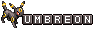

my top ten games
I usually play games on my laptop, though sometimes I play the XBox or 3ds!
My top ten games would be:
- the GTA series
- the Pokemon franchise
- Bully
- Life is Strange
- Gone Home
- Animal Crossing
- the Sims series (especially 2, and 3)
- Attack of the friday monsters
- Animal Crossing : Happy Home Designer
- NFSU2
